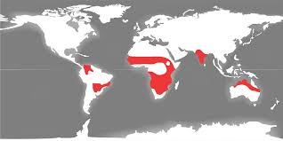

Raksturojums
Savannas ir kā pārejas zona no tuksnešiem uz mitrajiem ekvatoriālajiem mežiem.

Ģeogrāfiskā izplatība
Savannas ir iezīmētas ar sarkanu.Klimats
Savannās ir silts un nokrišņi ir vidēji. Šajā dabas zonā ir divi gadalaiki - aptuveni 6 līdz 8 mēnešus ilga mitra vasara un 4 līdz 6 mēnešus ilga sausa ziema. Vidējā temperatūra ir ap 20-30°C. Nokrišņu daudzums svārstās no 500 līdz 1500 mm gadā. Sausajos periodos te bieži ir zibens izraisīti ugunsgrēki.
Augsnes
Savannās augsnes parasti ir sarkanas vai dzeltenas ar vidēju auglību. Savannās visizplatītākie augi ir dažādas graudzāles, piemēram, sarkanās auzas, zvaigžņuzāle, citronzāle. Šīs zāles ir stingras, izaug vairāku metru garumā un pārklāj visu zemi.
Raksturīgākie augi

Raksturīgākie dzīvnieki
Savannās dzīvo vairāk kā 40 dažādu sugu zīdītāju, piemēram, ziloņi, zebras, zirgi, žirafes, lauvas, hiēnas un bizoni, Austrālijā arī ķenguri.

Cilvēku nodarbošanās
Savannās bieži notiek ganīšana un lauksaimniecība, kas var izraisīt augsnes eroziju un bioloģiskās daudzveidības samazināšanos. Cilvēki, kas dzīvo savannās, audzē kukurūzu, prosu, kokvilnu un zemesriekstus.